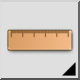
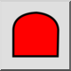

Esta es una traducción automática.
Barra de herramienta / icono:   Menú: Información > Área polilínea Acceso directo: I, I Comandos: infopolylinearea | ii
Esta herramienta mide el área de una polilínea.